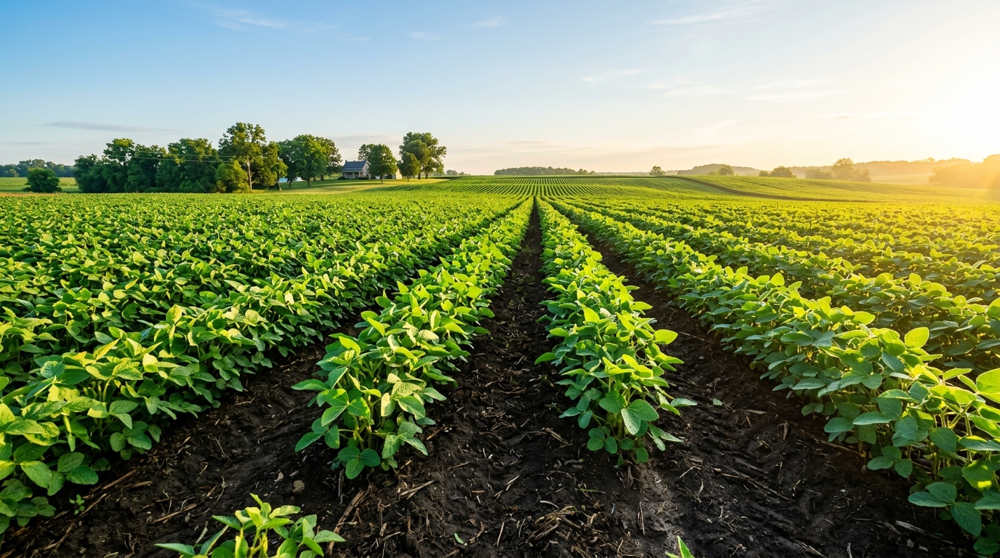
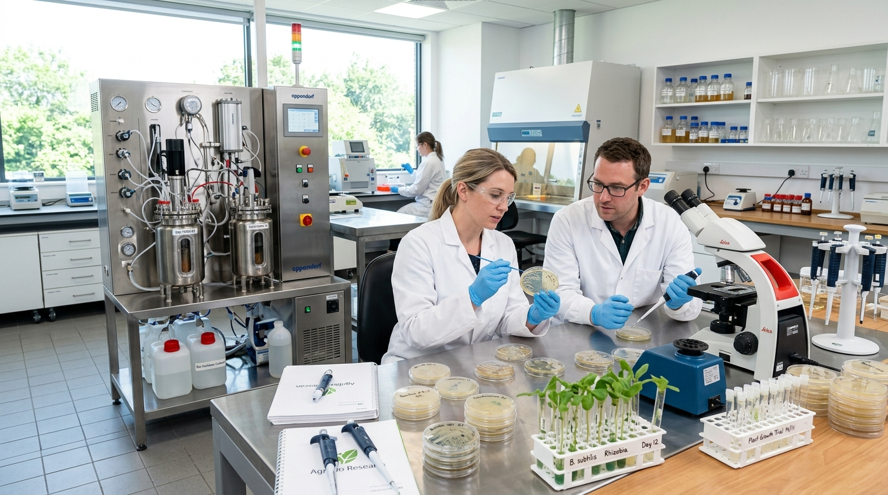
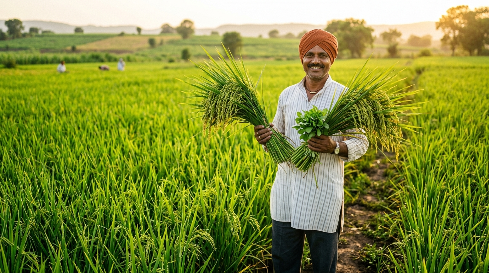

Bio-Fertilizer • Solubilizing
Empowered Modern Bio-Agriculture
Revolutionizing Soil Nutrition with
Revolutionizing Soil Nutrition with
Smart Bio-Solutions: Bio-Innovation
Phytolux Bio Science engineers high-viability bio-fertilizers, bio-stimulants, and microbial consortia — regenerating depleted living soil, accelerating root biomass, and boosting farm productivity without toxic chemical runoff.

🌾
🔬
🌱
120K+ Progressive Farmers Joined
Join the Future of Science-Driven Agriculture Today
Backed by 50,000+ Farmers Across India, Validated by Premier Agronomic Standards
ICAR Validated Strains
FCO 1985 Certified
ISO 9001:2015 QA
NPOP Organic Standard
APEDA Registered
NABARD Agritech Partner
At Phytolux, we merge biotechnology with rhizosphere ecology

100%

Bio-Active Viability Rate
Every batch is certified with minimum 1×10⁸ CFU/g viable microbial counts, ensuring vigorous root rhizosphere colonization.
20+
Years of Agronomic Research
Formulated with proprietary bacterial and mycorrhizal consortia engineered to thrive across diverse soil pH and salinity.
160K+
Acres Cultivated Across India
Empowering commercial growers and smallholders to cut synthetic chemical fertilizer costs by up to 30%.
● Our Formulations
Tools to Power Smarter Farming
Discover Phytolux's range of bio-fertilizers, bio-stimulants, and microbial consortia designed to help farmers save time, cut fertilizer costs, and boost harvest yield.
Explore All 16 Formulations
Bio-Fertilizer • Mobilizer
Phytolux Potash-Bio (KSB)
Frateuria aurantia • 1×10⁸ CFU/ml
Bio-Fertilizer • Legumes
Phytolux Rhizo-Fix
Rhizobium leguminosarum • Pulses
Bio-Fertilizer • N-Fixer
Phytolux Azoto-Power
Azotobacter chroococcum • Free-living
Bio-Stimulant • Marine Algae
Phytolux Bio-Zyme Gold
Ascophyllum nodosum 18% • Cold Extracted
Bio-Fertilizer • Endomycorrhiza
Phytolux Myco-VAM RootMax
1200 IP/g Glomus intraradices
Micronutrient • 100% Chelated
Phytolux Micro-Nutri Chelate
EDTA Zn, Fe, Mn, Cu, B, Mo Complex
Soil Conditioner • Organic
Phytolux Humic-Fulvic 80%
80% Potassium Humate • Shiny Flakes
Bio-Control • Antagonistic
Trichoderma Bio-Shield
Trichoderma viride • 2×10⁶ CFU/g
● Insights & Agronomy
Stay Ahead with the Future of Smart Bio-Farming
Bio-Fertilizer
How Phosphate Solubilizing Bacteria Cut DAP Costs by 30%
Bio-Stimulants
Top 5 Benefits of Cold-Water Seaweed Extract for Heat Tolerance
Microbiology
Root Colonization: How Mycorrhizal Fungi Increase Water Absorption by 700%
Field Case Study
Field Study: Enhancing Chilli & Tomato BRIX Sugar and Packout Yields by 28%
Main Advantage
Making Farming Resilient
Making Farming Resilient
and More Productive
We provide practical biological tools that solve the core challenges of modern agriculture: rising fertilizer costs, soil hardening, salinity stress, and micronutrient locks.
Biological N-P-K Mobilization
PSB and KSB unlock fixed soil phosphates and potash minerals, cutting synthetic chemical inputs by 20–25%.
Rhizosphere Soil Regeneration
Active microbial consortia restore beneficial flora, buffer soil salinity, and disperse hardpan layers.
Abiotic Stress Shielding
Cold-water Ascophyllum marine bio-stimulants prevent flower shedding under drought and extreme temperature spikes.
Sealed Batch Traceability
Guaranteed minimum 1×10⁸ CFU count with tamper-proof induction seals compliant with FCO 1985 guidelines.
Get Started Easily
Farming Smarter Starts Here
No matter the scale of your farm or your experience with bio-solutions, our duty agronomists are here to guide your transition every step of the season.
01
Tell Us About Your Farm & Crop
Share your acreage, crop variety, and current soil issues for personalized advice.
02
Get a Custom Science-Based Bio Plan
Receive tailored application schedules for seed treatment, basal, and drip stages.
03
Try It Out with Agronomist Backing
Deploy certified bio-inoculants with real-time remote support via WhatsApp helpline.
04
Watch Your Soil & Harvest Margins Improve
Experience deeper root depth, higher test weight, and reduced chemical expenditure.
Grower Verification
★★★★★ 5.0 Rating
“Since introducing Phytolux PSB and Consortia into our paddy and wheat rotations, our DAP requirement reduced by 25% while our soil friability visibly improved and crop roots penetrated deeper.”
1,200+
Dealers & Retail Counters
20–25%
Fertilizer Cost Reductions
Need Crop Guidance?
Speak directly with a duty agronomist